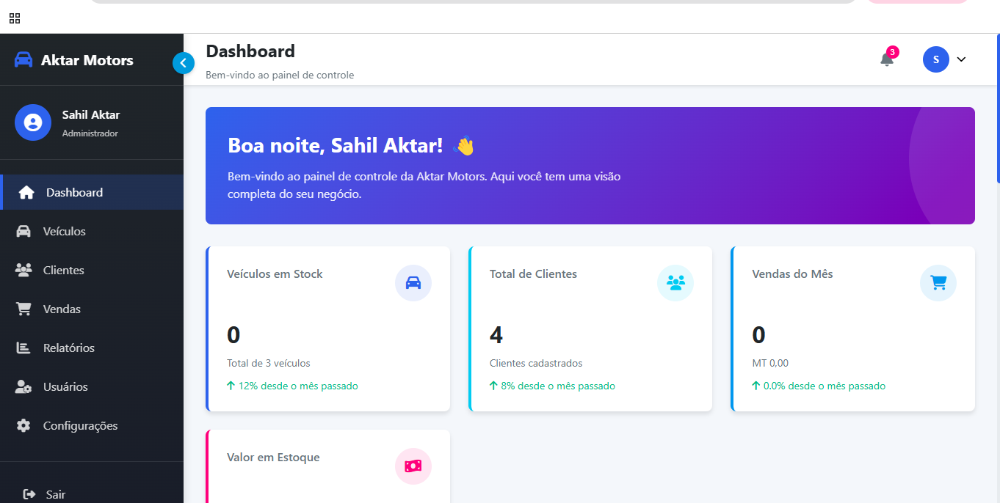
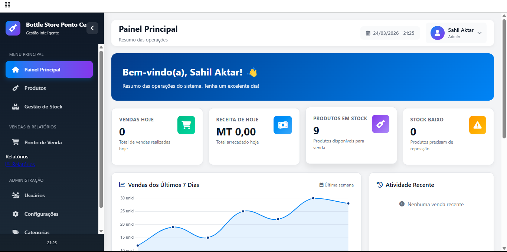
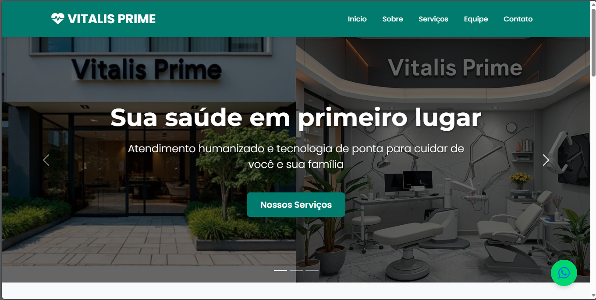

Universidade Católica de Moçambique • 3º Ano
PHP | Java | JavaScript | HTML | CSS | MySQL
Conheça um pouco da minha trajetória em Moçambique
Actualmente no 3º ano do curso de Tecnologia de Informação na Universidade Católica de Moçambique, tenho me dedicado ao aprendizado de diversas tecnologias, com especial enfoque em PHP para desenvolvimento web, Java para sistemas desktop, JavaScript para interatividade e MySQL para bases de dados.
Desenvolvo projectos práticos voltados para soluções reais, com foco em organização, funcionalidade, aparência profissional e facilidade de utilização.
| Tecnologia | Nível | Experiência |
|---|---|---|
| PHP | Intermediário | 1 ano |
| Java | Intermediário | 2 anos |
| JavaScript | Intermediário | 1 ano |
| HTML5 | Intermediário | 2 anos |
| CSS3 | Intermediário | 2 anos |
| MySQL | Básico/Intermediário | 1 ano |
Soluções tecnológicas para o seu negócio ou projecto
Sistemas web dinâmicos, áreas administrativas e aplicações completas com PHP e MySQL.
Aplicações desktop com interface gráfica para gestão de negócios e controlo de processos.
Interatividade e dinamismo para websites com JavaScript moderno.
Criação de sites modernos que se adaptam a qualquer dispositivo.
Alguns trabalhos desenvolvidos durante a minha formação

PHPSistema web desenvolvido em PHP com MySQL para cadastro de viaturas, controlo de stock, registo de vendas, clientes, preços e relatórios. Versão demo feita em PHP.

PHPSistema web desenvolvido em PHP com MySQL para controlo de vendas, gestão de stock, validade de produtos e relatórios para bottle store.

HTML/CSSWebsite institucional desenvolvido para a cadeira de Fundamentos de Páginas Web, com informações sobre serviços, horários, especialidades e formulário de contacto.
"Em Moçambique, a tecnologia pode ser a chave para resolver muitos dos nossos desafios. Cada linha de código é uma oportunidade de fazer a diferença."
— Sahil Aktar, Estudante de TI